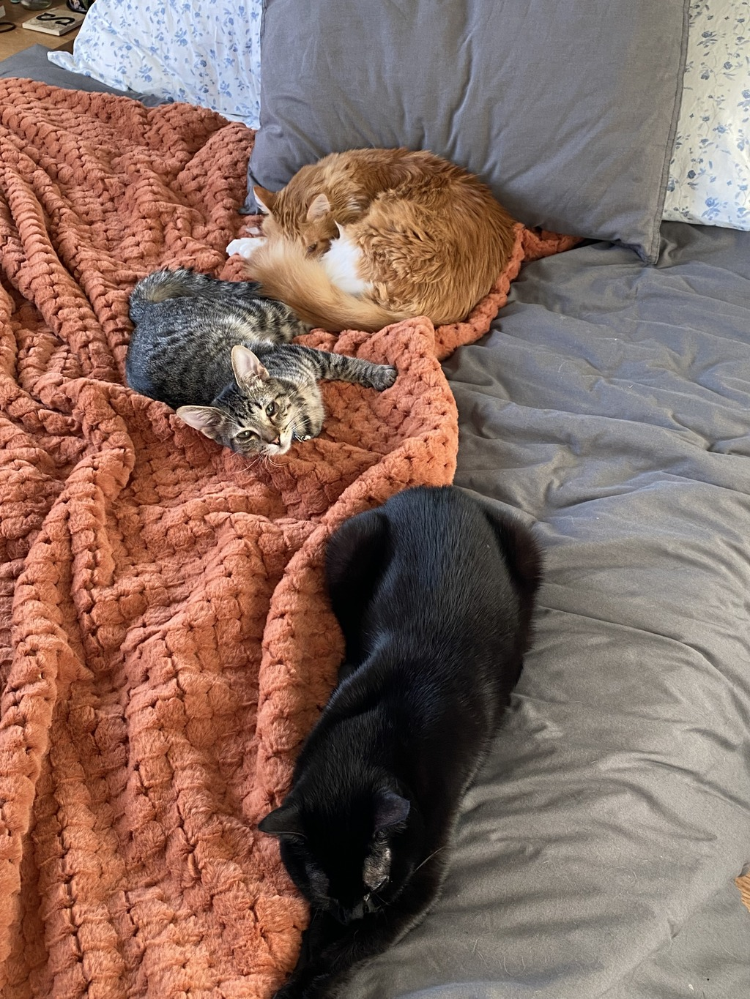
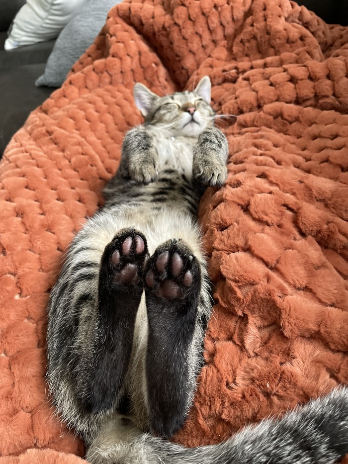

I currently have three beautiful cats. They are named Jiji, David, and Augustus(Auggie). Jiji is a beautiful, goregous, svelt 3-year old little lady. David is a round, 2-year old, happy-go-lucky orange long-haired tabby. Augustus is my new baby, and he is almost a year old! He is a gray tabby, and an asbolute terrorist. I love my cats, and I don't know what I would do without them. The picture below is a picture of the three of them.

My cats are interesting, and they have tons of weird quirks and fun facts! I think David is the most intersting, as he has something called Wobbly Cat Syndrome. This means that he is a little different from other cats. Here are some of his weird quirks:
If you want to know more about cats in general, this website has a lot of wonderful information about our favorite felines. In the meantime, to close this out, here is a cheatsheet for getting to know my cats:
| Jiji | David | Auggie |
|---|---|---|
| Yellow Eyes | Green/Yellow Eyes | Green Eyes |
| Loves: turkey fish eggs |
Loves: cheese chicken fish |
Loves: anything he can grab |
| Black toe-beans | Pink toe-beans | Red toe-beans |
